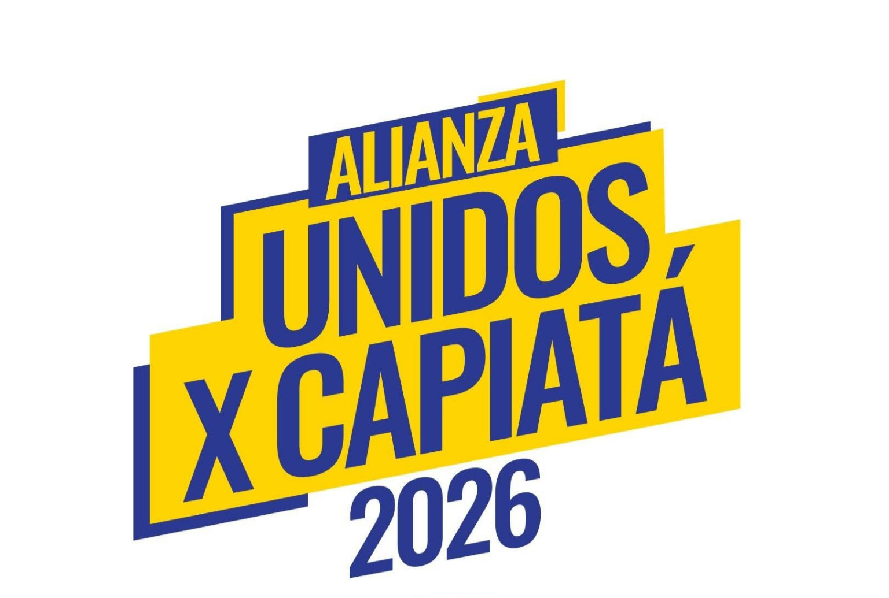

Concejal de Capiatá

Partido Cruzada Nacional - Alianza Unidos x Capiatá
Contactar por WhatsAppGestión abierta con rendición de cuentas y acceso a la información pública.
Trabajo conjunto con la comunidad para prevenir delitos y mejorar la seguridad.
Apoyo a emprendedores locales y generación de oportunidades laborales.
Fiscalización constante del uso de los recursos públicos.
Programas para jóvenes en educación, deporte y empleo.
Soy Jorge Martínez, candidato a concejal de Capiatá. Represento al Partido Cruzada Nacional dentro de la Alianza Unidos x Capiatá. Mi compromiso es construir una ciudad sin corrupción, con transparencia y oportunidades para todos.